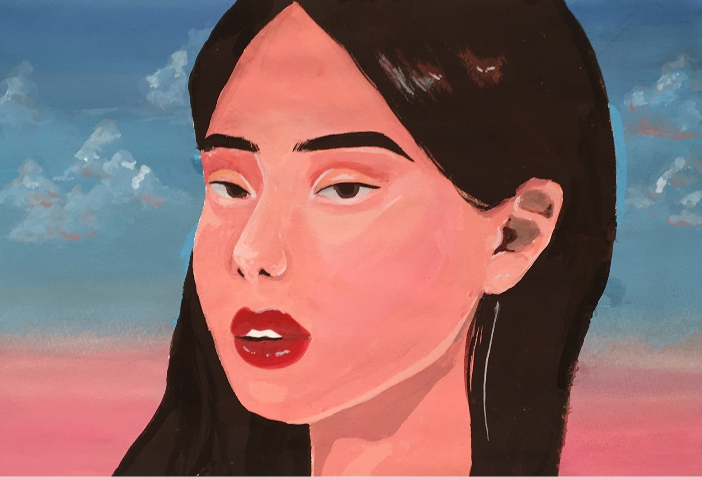

髙木
Portfolio
Misato Takagi



Every one of these ilustrations were of my close friends I have had in my lifetime. Some stayed, some didn't. This is a way for me to keep the memory of them within my art as a keepsake. Each piece are part of my story and they are the ones who shaped me as a person I am today. The last piece of the mountain is a scenery of my hometown, Shizuoka, Japan. Whenever I think of home, that is the image I think of.